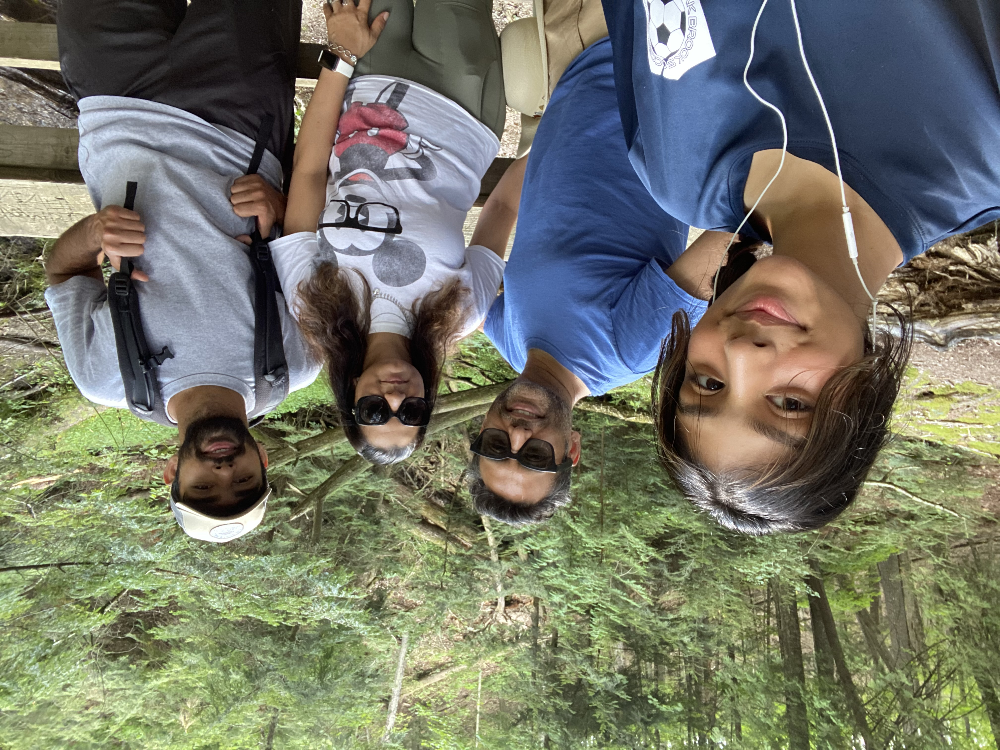
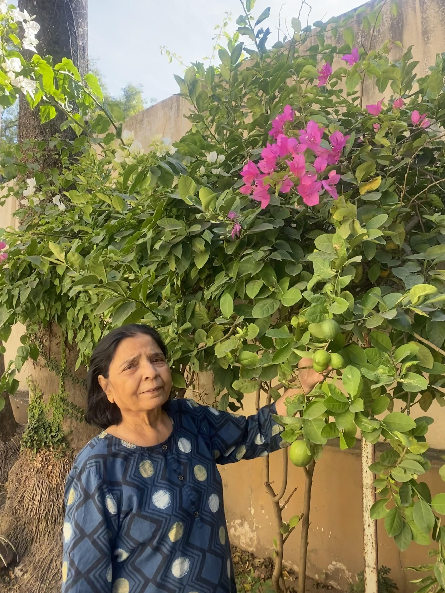
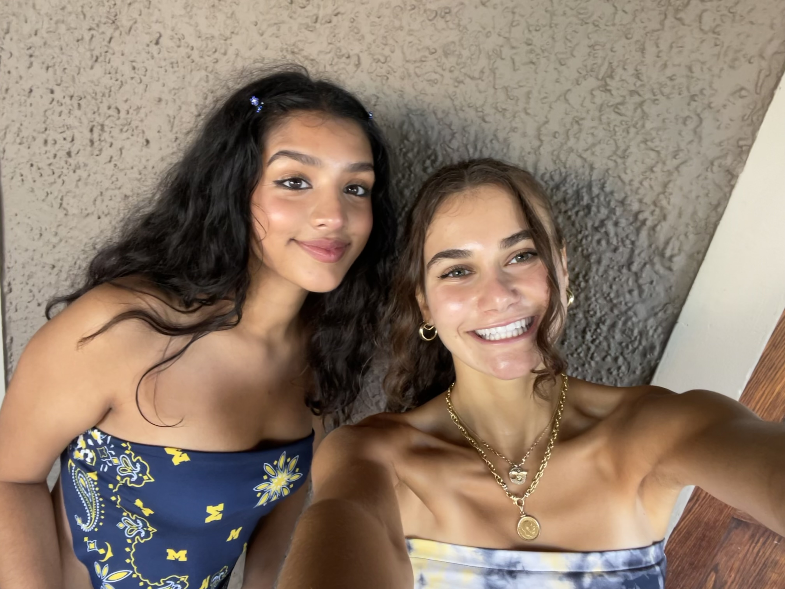
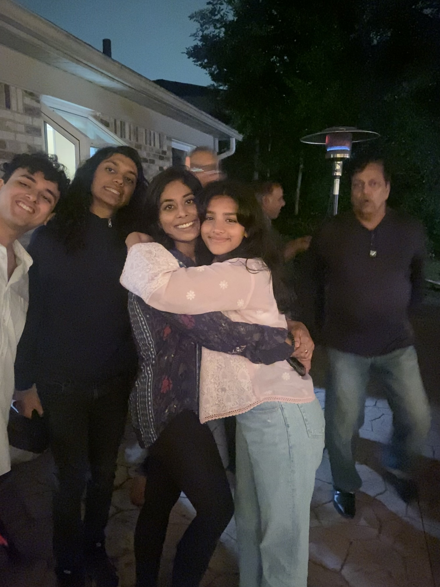

Pictures
My name is Sarrah Ahmed. I am from Rochester Hills, MI and I am 20 years old
Here is my family and I on a trip we went on to Northern Michigan about a year and half ago

These are my grandparents. I recently went to India to visit them! They are my favorite people ever

Here are a few of my closest friends.
Some other photos

